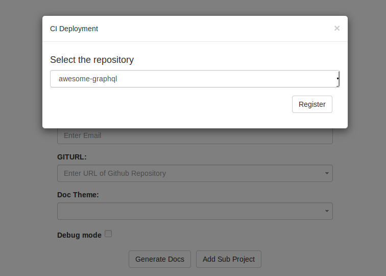

yaydoc¶


Docs! Yay!
Deployment¶

Prerequisites¶
Usage¶
With environment variables
Set the following Environment Variables in Travis CI. Guide
| Environment Variable | Description | Default / FORMAT |
|---|---|---|
| AUTHOR | Author of the repository. | Github username or organization |
| DOCPATH | Path of the documentation. | NONE * (eg.
docs/) |
| DOCTHEME | Name of the theme. | alabaster (built-in themes ) / (Custom themes available in PyPi are also supported) |
| DOCURL | Custom URL at which the site should be published. | <username or organization>.g ithub.io/<repon ame> (Reference ) |
| PROJECTNAME | Name of the Project. | Name of the repository |
| VERSION | Version of the Project. | development |
| LOGO | An image to be used as logo for the Project. | path relative to DOCPATH. example - To use DOCPATH/images/ logo.svg as the logo, set LOGO as images/logo.svg . |
| MARKDOWN_FLAVOUR | Input file format flavour. The
supported flavors are markdown,
markdown_strict,
markdown_phpextra,
markdown_github, markdown_mmd,
commonmark |
markdown_githu b |
| OAUTH_TOKEN | Github Personal Token. generate it by following this Guide | NONE *(Not required If using ssh) |
| DEBUG | Enable detailed logging | false |
| HEROKU_APP_NAME | Name of the heroku app. Your docs would be deployed at .herokuapp.com | NONE |
| HEROKU_API_KEY | You can find the key in the Account page (in the API Key section) on your heroku dashboard | NONE *(Not required if not deploying to Heroku) |
| AUTOAPI_PYTHON | If this is true, Yaydoc will crawl your repository and try to extract API documentation for all python packages | false |
| AUTOAPI_PYTHON_ PATH | Relative path from the root of the repository, where autoapi will search for Python packages | By default The entire repository is searched |
| AUTOAPI_JAVA | If this is true, Yaydoc will crawl your repository and try to extract API documentation for all java packages | false |
| AUTOAPI_JAVA_PA TH | Relative path from the root of the repository, where autoapi will search for Java packages | By default The entire repository is searched |
| SUBPROJECT_URLS | Comma seperated URLs of all repositories which should be included when building documentation | NONE |
| SUBPROJECT_DOCPA THS | Comma seperated DOCPATHs for all
subprojects |
By default It
is assumed
DOCPATH is
docs |
* : The following environment variables must be specified for yaydoc to work.
With a configuration file
You could also use a configuration file instead of setting up
environment variables.
Yaydoc automatically reads from a file named .yaydoc.yml if present
in the root of the repository.
- Specifying Metadata
metadata:
author: FOSSASIA
projectname: Yaydoc
version: development
debug: true
subproject:
- url: <URL of Subproject 1>
docpath: doc
- url: <URL of subproject 2>
- Configuring build options
build:
doctheme: fossasia
docpath: docs/
logo: images/logo.svg
markdown_flavour: markdown_github
autoapi:
- language: python
- language: java
- Configuring publishers
publish:
ghpages:
docurl: yaydoc.fossasia.org
heroku:
app_name: yaydoc
Currently Yaydoc supports publishing to ghpages and heroku.
Travis Configuration¶
Add the following content to the .travis.yml file in the root
directory of your repository.
deploy:
- provider: script
skip_cleanup: true
script: wget -O - https://raw.githubusercontent.com/fossasia/yaydoc/master/generate_ci.sh | bash
Deploying to Heroku¶
If you are deploying to Heroku, you also need to install the Heroku
CLI.
To install it, you can add the following content to the
.travis.yml filesudo: required
before_deploy:
- wget -qO- https://toolbelt.heroku.com/install-ubuntu.sh | sh
Using SSH¶
Additionally If you have ssh setup on your repository, yaydoc prioritizes it over Github Personal token. To setup ssh follow these steps.
- Generate a new ssh key following this Guide
- Encrypt the generated keys by following this Guide
- Add public key to github by following this Guide
- Add the following to your
.travis.ymlmaking appropriate changes where necessary
before_deploy:
- openssl aes-256-cbc -K $encrypted_<hash>_key -iv $encrypted_<hash>_iv -in <encrypted-file-name> -out <decrypted-file-name> -d
- eval "$(ssh-agent -s)"
- chmod 600 <decrypted-file-name>
- ssh-add <decryted-file-name>
Accessing the Yaydoc CI¶

- Click the
CI Deploybutton

- Select the repository in which you want to integrate Yaydoc CI

- After successful registration Yaydoc will push the documentation to gh-pages on every commit the user makes.
- Sphinx’s alabaster theme will be used for documentation
- You can see the generated documentation at
https://<username>.github.io/<project name>